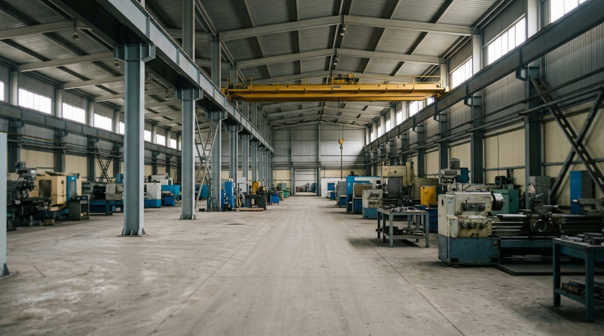
1
Подтема
Модуль
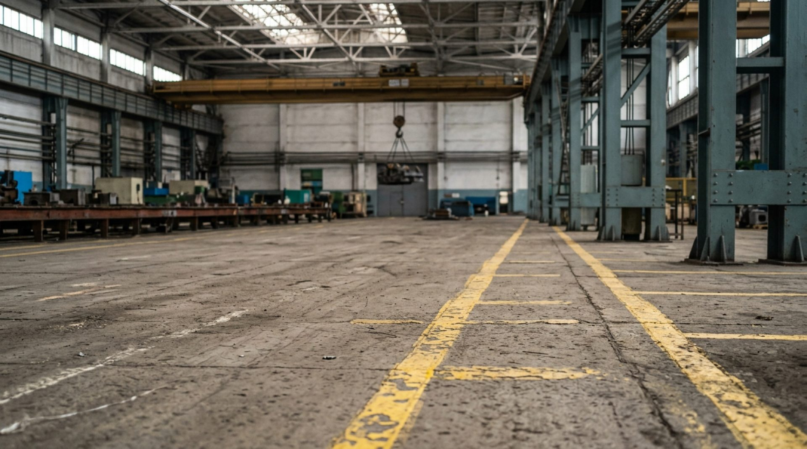
Разбор
Сәлеметсіздер ме
Этот курс проходят раз в год — таково требование правил для тех, кто работает на…

Разбор
Курс — девять модулей
1
После подтем — небольшое практическое задание, чтобы проверить самому…
2
В конце — итоговый тест: тридцать вопросов, один астрономический час, порог…
3
Не получится с первого раза — будет вторая попытка, не ранее чем через месяц

Вход в модуль
Модуль 1
Первый модуль отвечает на пять практических вопросов: что от вас требуется по работе
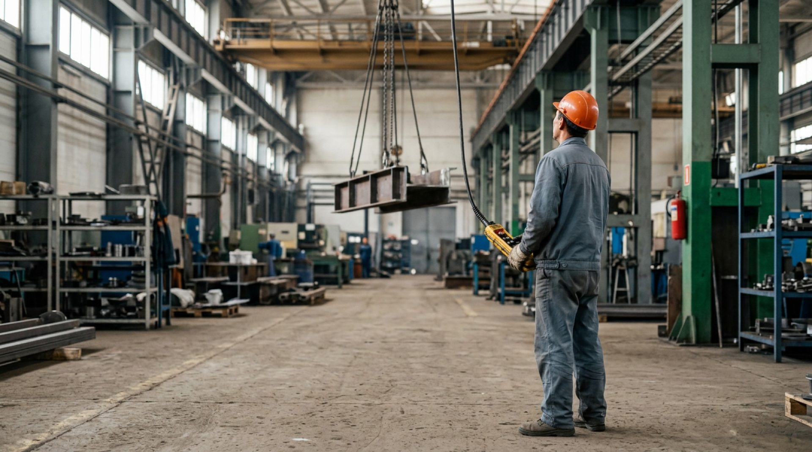
1.1
Подтема
Обязанности оператора: что от вас требуется на практике

1.11.21.31.41.5
Вход в тему
Смена только началась
Можно сразу взяться за пульт — план не ждёт
1.11.21.31.41.5
Что дальше
Дальше — пять конкретных вещей, которые вы обязаны делать каждую смену
Не общие слова про ответственность — конкретный список
1.11.21.31.41.5
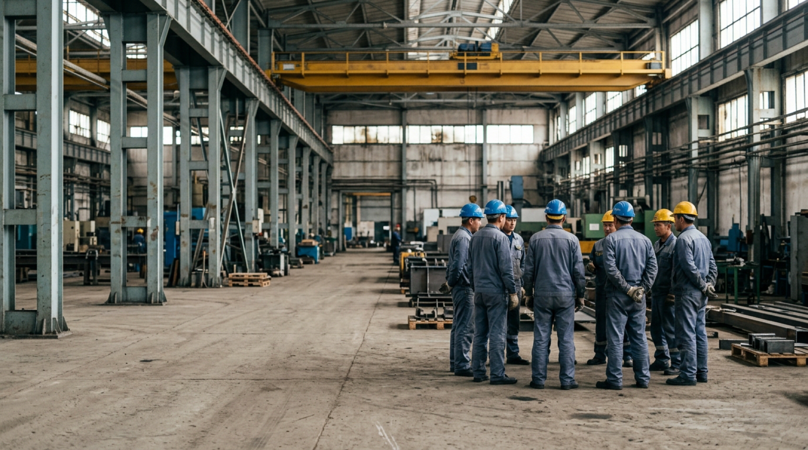
Обязанности оператора
На это отводится специальное время — не «между делом»
Осмотр крана перед началом работы, каждую смену
1.11.21.31.41.5
Обязанности оператора
Не понаблюдать ещё смену — сказать сразу
Сразу сообщить о любой замеченной неисправности
1.11.21.31.41.5
Обязанности оператора
Реально снижает риск, а не то, что кто-то проверит
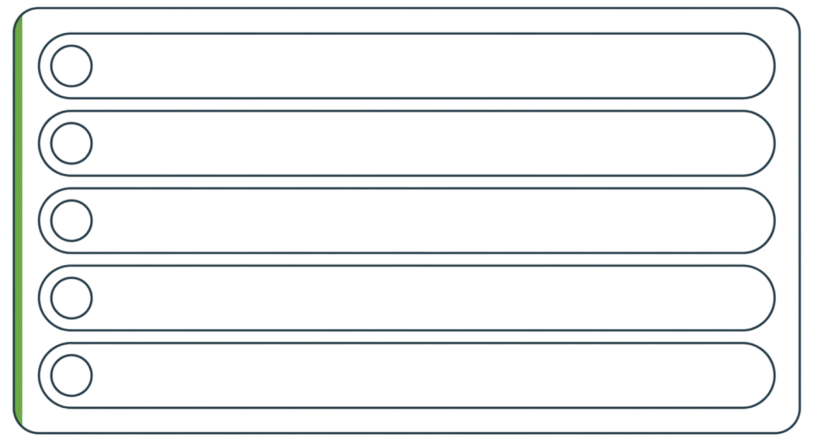
Осмотр крана перед сменой
Запись в вахтенный журнал
Работа по технологическому регламенту
Сразу сообщить о неисправности
Не чинить кран самому
Эти пять пунктов — не формальность
1.11.21.31.41.5
Итог подтемы
Пять вещей: осмотрели, записали, работаете по регламенту, сообщили
Пять вещей: осмотрели, записали, работаете по регламенту, сообщили, не чините сами
Это и есть ваша часть общей системы безопасности
Дальше — кто ещё в этой системе, и к кому конкретно идти, если что-то пошло не так
1.2
Подтема
Кто за что отвечает: три роли рядом с вами
1.11.21.31.41.5
Вход в тему
Вот вопрос: кому сказать?
Кран стал чуть дольше тормозить
1.11.21.31.41.5
Что дальше
Разберём все три роли — и станет ясно, с кем из них вы будете…
Сталкиваться чаще всего
1.11.21.31.41.5
Кто за что отвечает
Инженерно-технический работник по надзору
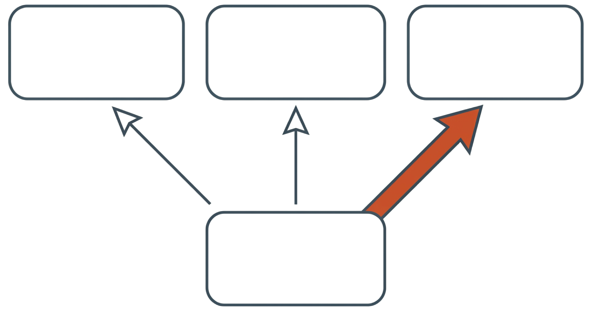
ИТР по надзору — правила в целом
Ответственный за исправное состояние крана
Ответственный за безопасное производство работ
Вы — оператор крана, управляемого с пола
Все три роли, о которых сейчас пойдёт речь, — не «получилось само» и не устная…
1.11.21.31.41.5
Кто за что отвечает
Отдельная история, не та, что вы делаете каждую смену сами
1
Он следит, чтобы правила соблюдались в целом: и по самим кранам, и по…
2
Он же вместе со второй ролью — сейчас расскажу — раз в год и раз в несколько лет…
1.11.21.31.41.5
Кто за что отвечает
Разница с первой тонкая, но важная
1
Вторая роль — инженерно-технический работник, ответственный за исправное…
2
Первый следит, что правила соблюдаются в принципе
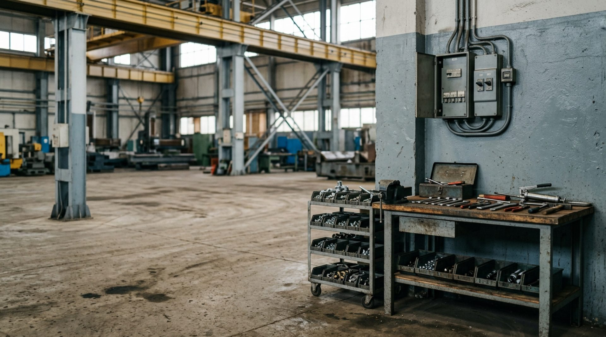
1.11.21.31.41.5
Кто за что отвечает
Именно к нему в итоге доходит ваше сообщение о неисправности из прошлой…
Второй занимается конкретикой: организует обслуживание и ремонт, ведёт учёт…
1.11.21.31.41.5
Кто за что отвечает
Лицо, ответственное за безопасное производство работ кранами
Третья роль — та, с которой вы, скорее всего, будете видеться каждую смену
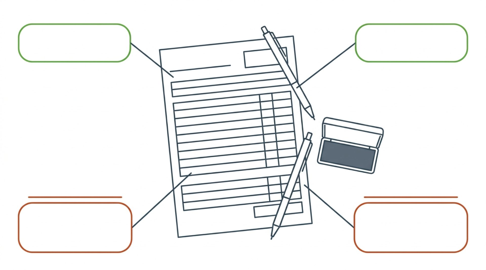
1.11.21.31.41.5
Кто за что отвечает
Приказом по предприятию закон требует, чтобы такой человек был на каждом…
Участке и в каждой смене, — не обязательно разный человек на каждую комбинацию
1.11.21.31.41.5
Кто за что отвечает
Три роли — три разных вопроса
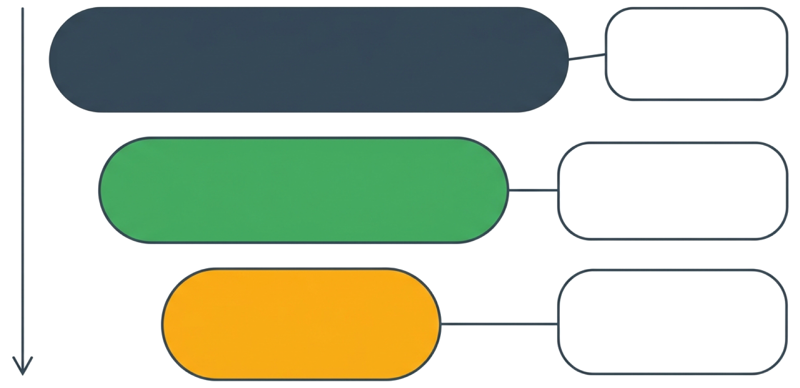
Закон
Правила промышленной безопасности
Регламент предприятия
Общие требования ко всем
Отраслевые нормы
Порядок на вашем участке
Про правила вообще
1.11.21.31.41.5
Итог подтемы
Заметили — сказали. Дальше решают они
Не нужно самому определять, насколько это серьёзно, и выбирать, к кому из троих…
Достаточно сообщить тому, кто ведёт вашу смену, — дальше информация дойдёт по…
Дальше — документ, который эту систему держит вместе
1.3
Подтема
Технологический регламент предприятия
1.11.21.31.41.5
Вход в тему
На вашем предприятии есть документ, который заранее знает ответ на один…
Многие операторы его в глаза не видели
1.11.21.31.41.5
Что дальше
Через пару минут вы будете точно знать, что это за документ
Кто его утверждает — и как он соотносится с законом
1.11.21.31.41.5
Технологический регламент
Технологический регламент — внутренний документ предприятия
Он описывает порядок работ именно на вашем участке, именно с вашим краном
1.11.21.31.41.5
Технологический регламент
Первый руководитель предприятия
1
Утверждает его первый руководитель предприятия — это прямо закреплено правилами
2
Кто именно готовит текст документа до утверждения, закон не оговаривает — на…
1.11.21.31.41.5
Технологический регламент
Время на осмотр
Закон требует, чтобы регламент доводил до вас конкретику — в частности, время на…

1.11.21.31.41.5
Технологический регламент
Вот список основных перемещаемых краном грузов с указанием их массы
1
То есть это не то, что нужно спрашивать у кого-то каждый раз, — это то, что…
2
Если такого списка на участке нет, об этом стоит сказать: его отсутствие — не…

1.11.21.31.41.5
Технологический регламент
С регламентом вас обязаны ознакомить
Не «когда будет время», не «в общих чертах на планёрке» — под роспись и заранее
Здесь правила не оставляют места для вариантов: с технологическим регламентом машинистов кранов…
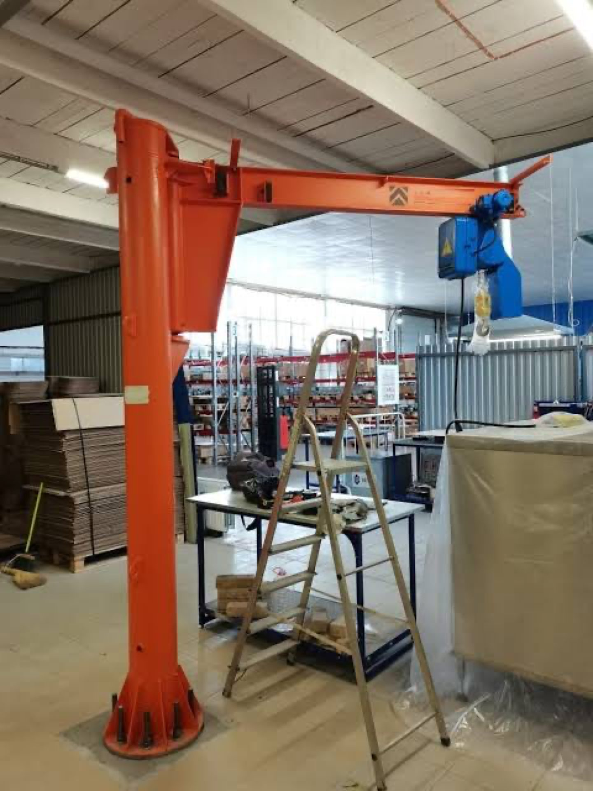
1.11.21.31.41.5
Технологический регламент
Регламент не может быть слабее закона
1
И важный момент — как регламент соотносится с законом
2
Регламент никогда не отменяет и не ослабляет требование закона
3
Он только уточняет: точные цифры именно для вашего крана и вашей площадки
1.11.21.31.41.5
Технологический регламент
Показалось, что регламент противоречит закону? Скажите об этом
1
Если вдруг покажется, что регламент требует что-то, что реально идёт вразрез с…
2
Скажите тому, кто отвечает за безопасное производство работ, и проясните это

1.11.21.31.41.5
Технологический регламент
Схема строповки — часть регламента
Ещё одна важная часть регламента — графическое изображение способов строповки…
1.11.21.31.41.5
Технологический регламент
Груз без готовой схемы — не самостоятельное решение
Не так
Рекомендация
А так
Тоже дословная норма закона
1.11.21.31.41.5
Итог подтемы
Закон — общее правило. Регламент — точные цифры для вас, в рамках этого правила
Регламент не спорит с законом и не заменяет его
Он уточняет закон под вашу площадку
Дальше — какие краны вообще попадают в эту программу
1.4
Подтема
Какие краны вы можете встретить, и какие из них
1.11.21.31.41.5
Вход в тему
Краны бывают очень разными — по размеру, по конструкции
Есть самоходные краны на колёсном или гусеничном ходу
1.11.21.31.41.5
Что дальше
Дальше — понятная картина: какие краны существуют в целом
Какие из них — именно ваша специализация
1.11.21.31.41.5
Какие краны вы можете встретить
У одних кранов оператор сидит в кабине прямо на самом кране
Важное различие — откуда управляют краном
1.11.21.31.41.5
Какие краны вы можете встретить
Наш курс — именно про управление с пола
1
У других — оператор стоит на полу и управляет кнопочным аппаратом на проводе…
2
Это два разных навыка, две разные профессии — потому что от этого зависит…
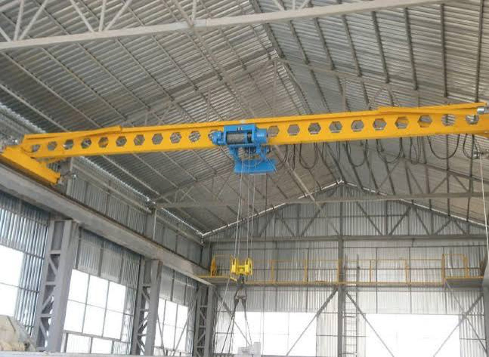
1.11.21.31.41.5
Какие краны вы можете встретить
Среди кранов, управляемых с пола, вы можете встретить три основных типа
Мостовой кран — движется по путям под потолком цеха в двух направлениях; его…
1.11.21.31.41.5
Какие краны вы можете встретить
Консольный кран — стрела закреплена на одной точке и описывает дугу…
Вокруг неё, удобен для одного конкретного участка
1.11.21.31.41.5
Какие краны вы можете встретить
Электрическая таль — самый компактный вариант
Часто на одной подвесной балке
1.11.21.31.41.5
Итог подтемы
Управление с пола — ваша специализация, независимо от конкретной модели крана
Краны различаются по конструкции сильно, а разделяются на две профессии по…
Именно поэтому весь дальнейший курс говорит сразу про все три типа, отдельно…
И последнее в этом модуле — самое важное: что делать, если работать прямо сейчас…
1.5
Подтема
Право на отказ от небезопасной работы
1.11.21.31.41.5
Вход в тему
Представьте: план горит, мастер стоит рядом и ждёт
За секунду до этого вы заметили что-то
1.11.21.31.41.5
Что дальше
Два разных случая: когда нужно останавливаться сразу, без вопросов
Когда достаточно просто уточнить, прежде чем действовать
1.11.21.31.41.5
Право на отказ от небезопасной
Случай первый: остановиться немедленно
1
Первый случай — когда опасность прямая и очевидная
2
Здесь раздумывать не о чем: работа останавливается сразу
3
Это прямой перегруз крана — вес явно больше того, на что рассчитана машина
1.11.21.31.41.5
Право на отказ от небезопасной
Человек под грузом или в зоне, куда груз может упасть или качнуться
1
Это видимая неисправность крана
2
В этих случаях решение одно: остановка
1.11.21.31.41.5
Право на отказ от небезопасной
Случай второй: сомнение — повод спросить
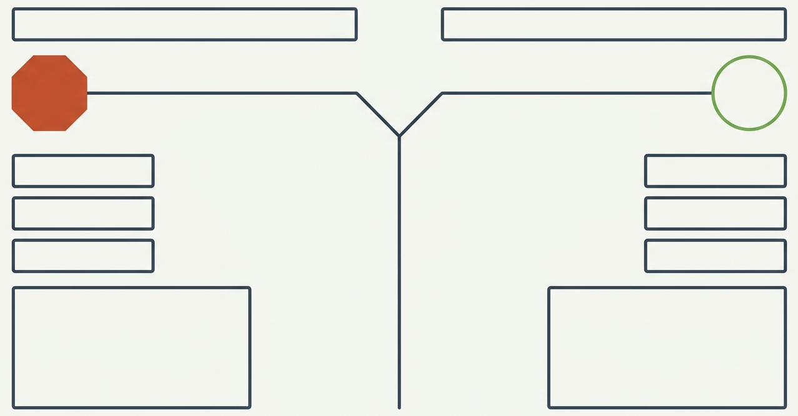
Явная опасность
Сомнение
Груз над людьми
Строп повреждён
Кран ведёт себя иначе
Сигнал неоднозначен
Груз тяжелее
Звук крана не тот
Остановиться и сообщить
Уточнить, потом продолжать
Второй случай — другой по характеру: не явная опасность, а сомнение Сигнал стропальщика показался неоднозначным
1.11.21.31.41.5
Право на отказ от небезопасной
Спросить стропальщика ещё раз
1
Здесь не обязательно останавливать всю работу — но правильное действие понятно…
2
Свериться с документацией по весу
3
Прислушаться повнимательнее
1.11.21.31.41.5
Право на отказ от небезопасной
Работник вправе отказаться от выполнения работы, если возникла ситуация
1
Оба случая закреплены законом
2
Условие одно — сообщить об этом непосредственному руководителю или…
1.11.21.31.41.5
Право на отказ от небезопасной
На практике для вас это означает — тому, кто ведёт вашу смену
1
Это оформленное законом право, и оно у вас уже есть — независимо от того, знали…
2
И работает оно не только когда опасность угрожает лично вам: остановив кран, вы…
1.11.21.31.41.5
Право на отказ от небезопасной
Несколько минут проверки
Уточнить или остановиться — это несколько минут простоя
1.11.21.31.41.5
Право на отказ от небезопасной
Концевой выключатель и ограничитель грузоподъёмности срабатывают…
1
Продолжить, несмотря на сомнение, и ошибиться — расследование, ремонт, а в…
2
А ваше право уточнить или остановиться — единственный барьер, который включаете…
1.11.21.31.41.5
Итог подтемы
Явная опасность — стоп. Сомнение — уточни
Явная опасность — перегруз, человек под грузом, видимая неисправность…
Сомнение, но не уверены — не молчите, спросите и убедитесь
В обоих случаях время у вас есть, вопрос лишь в том, чтобы им воспользоваться
Дальше — Модуль второй: сам кран, из чего он состоит и что в нём вообще можно…
1.11.21.31.41.5
Заключение модуля
Соберём модуль воедино
У вас пять конкретных обязанностей каждую смену — осмотр, запись, работа по…
У вас на руках технологический регламент — с точными цифрами для вашего крана…
Каким бы краном вы ни управляли — любого из трёх типов, зарегистрированным или…
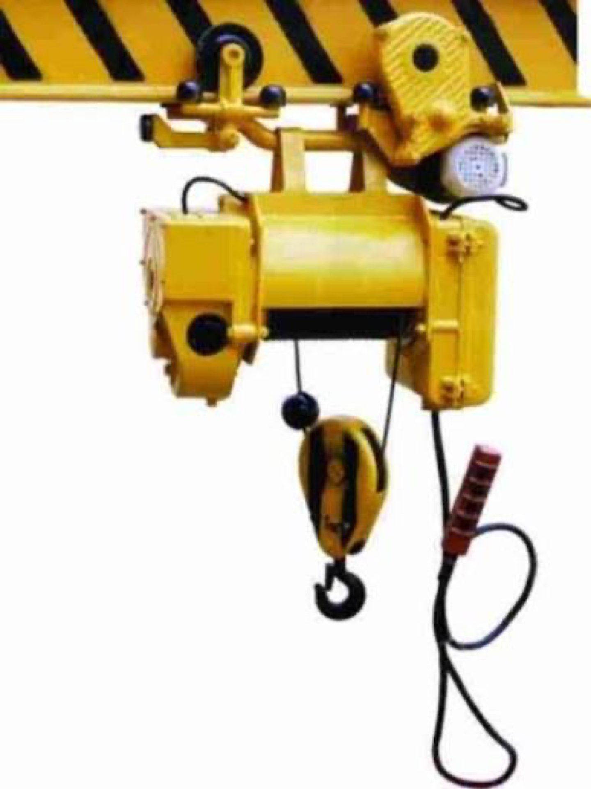
1.11.21.31.41.5
Заключение модуля
И, пожалуй, самое важное: у вас почти всегда есть время сделать работу…
И, пожалуй, самое важное: у вас почти всегда есть время сделать работу безопасно
Явная опасность — остановка без раздумий
Сомнение — уточнение перед тем, как продолжать
Это право связывает все остальные модули курса — оно работает именно тогда…
Дальше — сам кран: из чего он сделан и что в нём можно увидеть, если знать, куда…